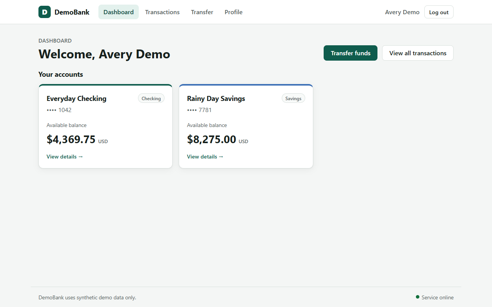

{'total_requirements': 32, 'checked_scenarios': 1, 'passed_requirements': 1, 'failed_requirements': 0, 'unverified_requirements': 31}
PRD source preserved. Unexecuted checks are UNVERIFIED, not failed.
| PRD ID | Section | Verdict | Source quote |
|---|---|---|---|
| PRD-001 | Users and access | UNVERIFIED | The target has one seeded demo customer. |
| PRD-002 | Users and access | PASSED | The landing page provides a clearly labeled **Enter Demo** action. It opens the demo dashboard without requiring a password or real identity information. |
| PRD-003 | Users and access | UNVERIFIED | The header identifies the active demo customer and provides a **Log out** action. |
| PRD-004 | Users and access | UNVERIFIED | Logging out returns the user to the landing page. Protected dashboard views should not remain usable after logout; direct navigation to them should return the user to the landing page or an access-required state. |
| PRD-005 | Users and access | UNVERIFIED | Refreshing while in a valid demo session should preserve that session. A logged-out user must not regain access merely by refreshing a protected page. |
| PRD-006 | Dashboard and accounts | UNVERIFIED | The dashboard shows the customer's checking and savings accounts. |
| PRD-007 | Dashboard and accounts | UNVERIFIED | Each account displays a readable account name, a masked account identifier, account type, and current available balance in USD. |
| PRD-008 | Dashboard and accounts | UNVERIFIED | Balances are displayed to two decimal places. The UI must not expose a full account identifier. |
| PRD-009 | Dashboard and accounts | UNVERIFIED | Selecting an account opens an account detail view with its current balance and related transaction history. |
| PRD-010 | Dashboard and accounts | UNVERIFIED | Account balances shown on the dashboard and detail view must agree with the latest successful transactions. |
| PRD-011 | Transfers between owned accounts | UNVERIFIED | The user can transfer funds between the checking and savings accounts owned by the demo customer. |
| PRD-012 | Transfers between owned accounts | UNVERIFIED | The transfer form includes source account, destination account, amount, and an optional memo. |
| PRD-013 | Transfers between owned accounts | UNVERIFIED | The source and destination must be different accounts. Same-account transfers must be rejected with a clear explanation and must not alter balances or create a transaction. |
| PRD-014 | Transfers between owned accounts | UNVERIFIED | Amount must be a positive number greater than zero, with no more than two digits after the decimal point. Blank, zero, negative, non-numeric, and over-precision values must be rejected with a clear validation message. Rejected input must not create a transaction or change balances. |
| PRD-015 | Transfers between owned accounts | UNVERIFIED | The amount must not exceed the source account's available balance. If funds are insufficient, the transfer must be rejected, both balances must remain unchanged, and no completed transfer must appear in history. |
| PRD-016 | Transfers between owned accounts | UNVERIFIED | A valid transfer is atomic: the source balance decreases by the amount and the destination balance increases by the same amount. No partial transfer is allowed. |
| PRD-017 | Transfers between owned accounts | UNVERIFIED | A successful transfer creates one completed transfer record that can be found in both relevant account histories. The record shows the amount, date and time, source, destination, status, and memo if supplied. |
| PRD-018 | Transfers between owned accounts | UNVERIFIED | The UI reports success only after the transfer has been committed. If a transfer is rejected or fails, the UI must explain that it did not complete and must not show a success state. |
| PRD-019 | Transfers between owned accounts | UNVERIFIED | Refreshing after a successful transfer must preserve the updated balances and transaction record. |
| PRD-020 | Transaction history | UNVERIFIED | The user can view a combined transaction history and account-specific history. |
| PRD-021 | Transaction history | UNVERIFIED | Each row shows date and time, description or memo, transaction type, amount, status, and relevant account. Amount direction should be clear for deposits, withdrawals, and transfers. |
| PRD-022 | Transaction history | UNVERIFIED | The user can filter history by account, transaction type, status, and date range. When filters are applied, every displayed row must satisfy all selected filters. |
| PRD-023 | Transaction history | UNVERIFIED | The start and end dates are inclusive. A transaction occurring on either boundary date must be included when it matches the other filters. |
| PRD-024 | Transaction history | UNVERIFIED | An empty result set must show a clear empty state, not an error or unrelated transactions. |
| PRD-025 | Transaction history | UNVERIFIED | Clearing filters restores the unfiltered history. |
| PRD-026 | Profile | UNVERIFIED | A profile view displays only synthetic demo-customer details, such as display name and a masked email address. |
| PRD-027 | Profile | UNVERIFIED | The view must not reveal passwords, authentication tokens, full account identifiers, or data belonging to another user. |
| PRD-028 | General interface behavior | UNVERIFIED | The target works in a current desktop browser at a 1280 × 800 viewport and remains usable at narrower widths. |
| PRD-029 | General interface behavior | UNVERIFIED | Interactive controls have readable labels and communicate loading, success, validation, and failure states. |
| PRD-030 | General interface behavior | UNVERIFIED | A submitted action should not silently disappear. While waiting, the UI should show a loading state or otherwise prevent accidental duplicate submission. |
| PRD-031 | General interface behavior | UNVERIFIED | Navigation links and buttons lead to the labeled destination or perform the labeled action. |
| PRD-032 | General interface behavior | UNVERIFIED | A recoverable error must leave the user able to retry or return to the dashboard. |
The landing page provides a clearly labeled **Enter Demo** action. It opens the demo dashboard without requiring a password or real identity information.
Expected: Dashboard with active customer and two account cards, no password
Observed: URL=http://localhost:5173/dashboard, active=Signed in as Avery Demo, cards=2
Rationale: Verified resulting dashboard state after Enter Demo.

{
"calls": 1,
"input_tokens": 1378,
"output_tokens": 2417,
"estimated_api_usd": null,
"pricing_note": "Set INPUT_USD_PER_M_TOKENS and OUTPUT_USD_PER_M_TOKENS to estimate billed costs. Null means prices were not provided.",
"entries": [
{
"phase": "spec_ingestion",
"model": "gemini-3.5-flash-lite",
"input_tokens": 1378,
"output_tokens": 2417,
"estimated_usd": null
}
],
"replay_llm_cost_usd": 0
}